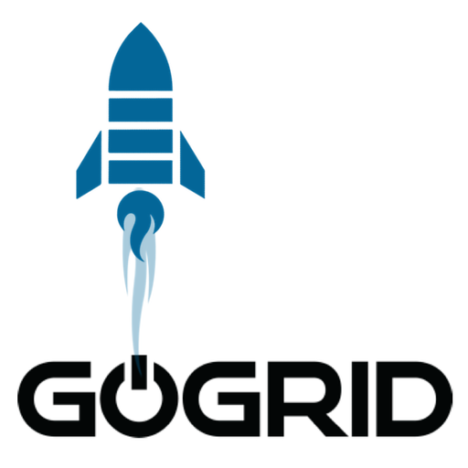

GoGrid and MongoHQ - A balanced proposition
One thing we believe in at MongoHQ is offering choices. Choices give developers more power to set where they want to go with their solutions. With that in mind, we’re pleased to say we’re able to bring a bit more Go to our choices as we add GoGrid to our menu of places you can get our flexible and automatically scalable Elastic Deployments of MongoDB.
GoGrid’s built itself around being an open and powerful platform for data services. Their system are available with a wide variety of configurations from spinning to SSD storage, from file systems to raw-disk, from regular to High Ram, and all available through software defined networking. With such a wide range of hardware and software combinations available and over 15,000 customers with 600,000 deployed VMs, GoGrid defines itself as a leader in open data and Big Data services and where better for MongoHQ to set up our latest deployment option.
Among the highlights of GoGrid’s offerings are their dynamic hardware based load-balancing options for application servers. These Web GUI manageable balancers have selectable algorithms for load distribution so you can select the optimal one for your configuration and are self-healing with integrated health checks to help ensure maximum uptime. If you think your systems demand balanced performance and high availability then GoGrid has what you need in that department.
The best part is that now you don’t have to give up on MongoHQ’s elastically scalable MongoDB systems to get that highly available feeling. We’re already on GoGrid’s US-West-1 datacenter. That means you can either use GoGrid’s “One Button Deploy” system or, if you are already using MongoHQ, select GoGrid as the location for your next elastic deployment. If you aren’t already using MongoHQ, you can get access to our elastic deployments of MongoDB there now by signing up through our GoGrid page.